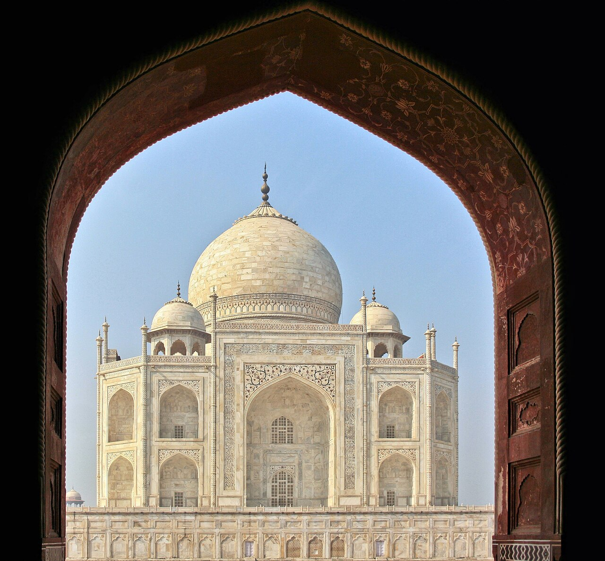

Sketch plan of the Taj Mahal and historic Agra map ↗
The digitized survey contains a city map as a frontispiece and a detailed plan facing printed page 33. The site plan shows the Yamuna, garden, mausoleum, forecourt, surrounding tombs and Taj Ganj.
Deep dives / Asia
The dome of the Taj Mahal stands at the north end of a garden and the south edge of a river. A walk from the old Taj Ganj market through the forecourt and Great Gate reveals the designed approach. Across the Yamuna, Mehtab Bagh offers a second view and a reminder that gardens and mansions once lined both banks.
The guide follows the Mughal riverfront from early imperial gardens to Shah Jahan’s tomb complex, including its architecture, construction trades, waterworks and setting on both banks.

Approximate locations from the Taj Mahal’s former market and river terrace to Agra Fort, Mehtab Bagh and upstream gardens on the Yamuna. Site plans show the terrace and forecourt in more detail.
1632–1648 CE
The marble burial monument stands on the complex’s northern terrace facing the Yamuna. [1] [5] [6] [2]
27.18°, 78.04°Mid-17th century CE
The mosque is the western building on the river terrace, with a prayer niche on its west wall. [5] [6]
27.18°, 78.04°Mid-17th century CE
The eastern hall balances the mosque in the composition. Its exact historical uses are less certain. [5] [6]
27.18°, 78.04°Mid-17th century CE
The garden’s principal paths and channels divide it into four quarters and meet at a raised pool. [5] [9] [6]
27.17°, 78.04°Mid-17th century CE
The monumental gate separates the forecourt from the garden and frames a view along the main axis. [5] [6] [10]
27.17°, 78.04°Mid-17th century CE and later
The neighborhood south of the forecourt contains the former bazaar and caravanserai area, which helped support the complex. [5] [6]
27.17°, 78.04°Mid-17th century CE
A representative position for the historic western aqueduct, which brought water to the garden wall and distribution pipes. [9] [8]
27.17°, 78.04°16th–17th centuries CE
The Mughal fortress-palace anchors the west side of the river bend and contains residential and audience buildings. [3] [4]
27.18°, 78.02°Mughal period
The Moonlight Garden sits across the Yamuna from the Taj. Excavations documented the garden and its waterworks. [18] [14] [15]
27.18°, 78.04°1620s CE
Nur Jahan’s earlier marble garden-tomb for her father lies upstream on the Yamuna’s left bank. [16] [15] [12]
27.19°, 78.03°16th century CE origins, later phases
A terraced river garden associated with the beginnings of Mughal Agra and subsequently remodeled. [17] [11]
27.21°, 78.04°Landscape context
The Yamuna curves between the fort and the Taj. Historical views show gardens and mansions on both banks. [12] [13]
27.18°, 78.04°After the Mughal conquest of northern India in 1526, Agra became the first capital of the new empire. Babur and his followers laid out formally planned gardens along the Yamuna. Fortifications, court residences, tombs and more gardens accumulated on the banks under later rulers. Shah Jahan’s memorial for Mumtaz Mahal took the familiar riverfront terrace and garden plan and applied it to an imperial burial complex. [11] [3] [5]
| Date | Place or event | Evidence | Sources |
|---|---|---|---|
| From 1526 CE | Early Mughal river gardens in Agra. | Babur’s accounts and architectural studies trace the development of the waterfront form. | [11] [17] |
| 16th century CE | Agra Fort becomes an imperial fortress-palace. | The red sandstone enclosure and later palace buildings preserve phases of its occupation. | [3] |
| 1620s CE | Nur Jahan commissions her father’s garden-tomb. | The tomb of I’timad-ud-Daulah predates the Taj and already makes extensive use of marble. | [16] [15] |
| 1631–1632 CE | Mumtaz Mahal dies and construction begins the following year. | Historical accounts and inscriptions provide dates for the project and its individual buildings. | [7] [1] |
| 1648–1653 CE | Major work at the Taj completed in stages. | UNESCO places completion of the mausoleum in 1648 and gives 1653 as the endpoint for the additional work. | [1] [7] |
| Around 1830 CE | A panoramic scroll records both riverbanks. | The surviving scroll shows how Agra’s riverside buildings and gardens looked well after the Mughal building campaigns. | [12] |
| 1983 CE | Taj Mahal and Agra Fort inscribed on the World Heritage List. | UNESCO identifies the two monuments as separate properties. | [1] [3] |
| 2014–2019 CE | Garden conservation at Mehtab Bagh and I’timad-ud-Daulah. | The Archaeological Survey of India and World Monuments Fund researched and conserved features at both sites. | [15] |
The historic approach began with market streets and caravanserais at Taj Ganj. The adjoining forecourt served as a transition between the bazaar and the monument and housed ceremonial functions. Revenue from the commercial quarter contributed to the upkeep of the complex. Passing through the Great Gate reveals the cross-axial garden, with paths and water channels giving a long view to the tomb at the river’s edge. [5] [6] [9]
The mausoleum stands between a mosque on the west and its architectural counterpart, the mihmankhana, on the east. Four minarets emphasize the corners of the raised platform. At the center of the building, a marble screen encloses the cenotaphs seen by visitors. The actual burials are in a lower chamber. The garden and flanking buildings establish a strong symmetry across the site, while Shah Jahan’s later burial introduced a second cenotaph beside the centered memorial to Mumtaz. [1] [5] [6]
Building beside the Yamuna required substantial foundations. The construction account discussed by conservator P. B. S. Sengar describes excavation down to the subsoil water level, stone masonry set in lime below ground, and a brick-and-mortar platform above. Craftspeople gave the superstructure its detailed finish. Inlayers placed shaped pieces of colorful stone into the marble, while carvers cut reliefs and openwork screens. [7] [1]
The court drew on masons, stone cutters, dome builders and other specialists from across the empire and beyond it. The calligrapher Amanat Khan Shirazi left signed inscriptions that help date the decoration, a rare instance where the monumental fabric names a person who worked on it. Collectively the building and its accounts reveal a range of skills and supply relationships. The surviving record is much thinner for builders who moved materials or maintained the site. [1] [10] [13]
Water from the river was led to a reservoir west of the complex. Animal-powered lifting devices raised it to tanks that fed the aqueduct. From the higher level it entered buried pipes, supplying fountains and irrigating planting beds at garden level. The view of the central pool depended on this less visible infrastructure and on people operating the lifting equipment and tending the channels and plants. Physical remains, repair records and research into Mughal water systems support this reconstruction, though parts of the original route have disappeared or been altered. [9] [13] [8]
Across the river, excavations at Mehtab Bagh documented a garden and water features on an axis with the Taj. This alignment establishes a visual relationship across the Yamuna. Scholars have interpreted the opposite garden both as a counterpart within Agra’s riverfront garden tradition and as part of a larger conceptual composition. Plans and excavations can test the geometry and the history of construction. Intent beyond the surviving fabric is harder to establish. [9] [14] [18]
The garden-tomb of I’timad-ud-Daulah and the terraces of Ram Bagh show different ways of meeting the same river. Between surviving sites, historical views record mansions and gardens whose traces are fragmentary. The British Library’s scroll, which depicts the waterfront around 1830, helps identify those places when read with earlier maps and field evidence. Its nineteenth-century date matters when using it to understand Shah Jahan’s city. [16] [17] [12]
Open the source maps for their original detail, legends and dates. Their coverage and reproduction terms belong to the issuing institution.
The digitized survey contains a city map as a frontispiece and a detailed plan facing printed page 33. The site plan shows the Yamuna, garden, mausoleum, forecourt, surrounding tombs and Taj Ganj.
The British Library research publication reproduces and annotates sections of the nineteenth-century waterfront scroll and compares them with older topographical sources.
Figure 1 locates riverfront gardens on and near the Yamuna bend. The accompanying study examines how water and labor sustained them.
Open this era on global Explore ↗ Open Asia atlas ↗ Climate, sea level & ice-sheet context ↗
Sources checked and linked above; geological and historical dating methods follow the primary papers.